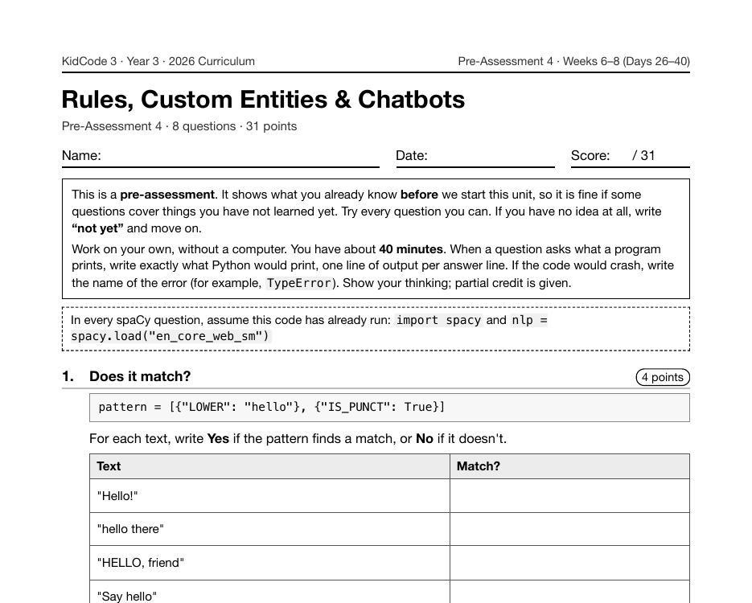

Project 18: Privacy Shield
Privacy Shield is Project 18, across Days 26 and 27 of Year 3. Students plan which kinds of entity to hide and what the placeholders look like, then replace entities token by token with token.ent_iob_ and text_with_ws, so that a two-word name becomes one [PERSON], not two.
What I taught that week
From the Year 3 curriculum, Week 6: Rules & Custom Entities
Day 26: Lab: Privacy Shield I. Project 5. Planning a redaction tool: which entity types (PERSON, GPE, ORG, DATE) to hide, what placeholders like [PERSON] look like, and how to test on sample letters.
Day 27: Lab: Privacy Shield II. Replacing entities while keeping the text readable, using token.ent_iob_ and token.text_with_ws so multi- word names are replaced once. Testing for names the model missed.
Day 28: Rule-Based Matching. Building patterns from token attributes such as {"LOWER": "hello"}, {"IS_PUNCT": True}, and {"POS": "NOUN"}. Using Matcher, matcher.add(), and matches as (match_id, start, end).
Day 29: Teaching spaCy New Entities. Adding an entity ruler with nlp.add_pipe("entity_ruler", before="ner"), writing patterns for custom labels like FOOD or PET, and seeing how rules and the model work together.
Day 30: Lab: Fantasy Map Finder. Recognizing invented places, heroes, and creatures with entity ruler patterns, then highlighting them with displaCy. Testing what happens when a rule and the model disagree.
What students built
75 students built a redaction tool. Every one hides PERSON entities and uses ent_iob_ to keep multi-word names together; 60% also hide places and 40% hide dates.
One student's program
This is one real submission, shown as the student wrote it apart from the removed name header. It was chosen by a fixed rule rather than for being the best: it is the submission closest to the project's median length among those that ran cleanly and contain nothing that could identify anyone. Parts are skipped where marked with …
def redact_with_count(text):
doc = nlp(text)
pieces = []
counts = {t: 0 for t in HIDE_TYPES}
previous_label = None
for token in doc:
label = token.ent_type_ if token.ent_iob_ != "O" else None
if label in HIDE_TYPES:
if label != previous_label:
pieces.append(f"[{label}]" + token.whitespace_)
counts[label] += 1
previous_label = label
else:
pieces.append(token.text_with_ws)
previous_label = None
return "".join(pieces), counts
redacted, counts = redact_with_count(LETTER)
print("The Desert Caravan - Privacy Shield report")
print(redacted)
print()
for kind, n in counts.items():
print(f"{kind} hidden: {n}")
A sample run of that program (the input was typed for this page)
The Desert Caravan - Privacy Shield report A long caravan of camels crossed the golden dunes near Cairo. The leader, an old trader named [PERSON] , guided the group by the bright stars. Every night his daughter [PERSON] cooked warm lentil soup over a small fire. On [DATE] they reached a green oasis where cool water bubbled from the sand. The travelers drank, rested, and told stories under the moon. In [DATE] the Desert Trade Company thanked [PERSON] with a silver compass. He tucked it gently into his pocket and smiled. PERSON hidden: 3 DATE hidden: 2 MONEY hidden: 0
The worksheet for this unit
Each unit has a pre- and post-assessment written from the same curriculum. This is the first page of the pre-assessment for the unit this project sits in: Rules, Custom Entities & Chatbots (Weeks 6–8 (Days 26–40), 8 questions).

Where it fits
This is the most applied program in Year 3 and connects directly to Day 34's lesson on responsible NLP and privacy. It is also one of the capstone options, as "Privacy Shield Pro".
Looking back
I chose this project partly because it's honest about the tool. A redactor built on a statistical model will miss things, and the curriculum's second Privacy Shield day ends with testing for exactly the names the model missed.